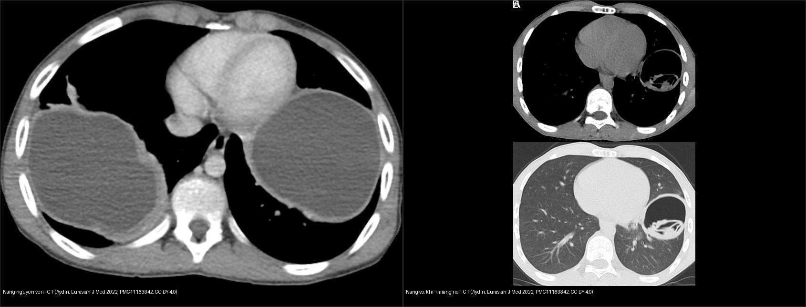
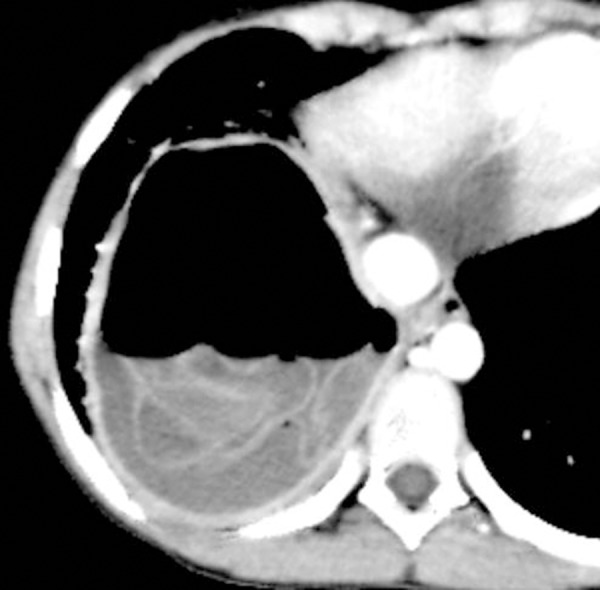
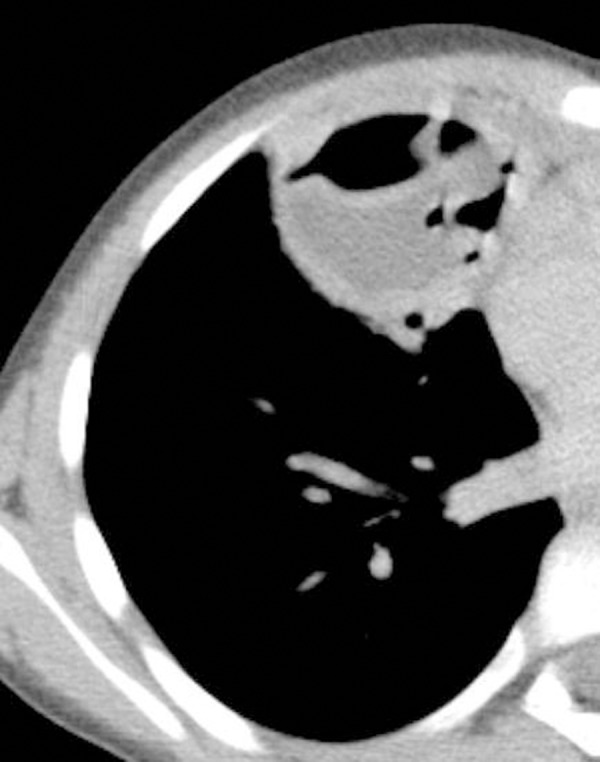
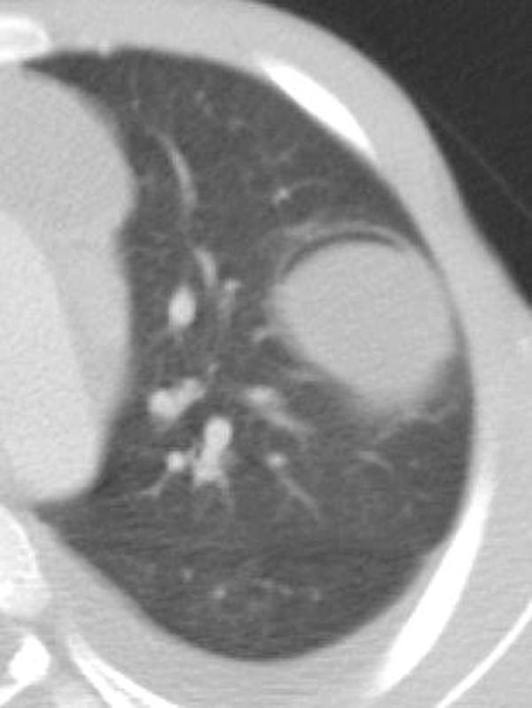
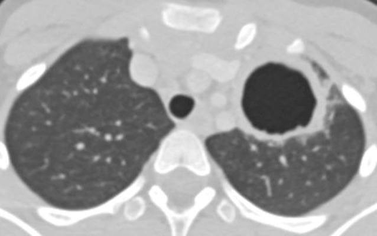
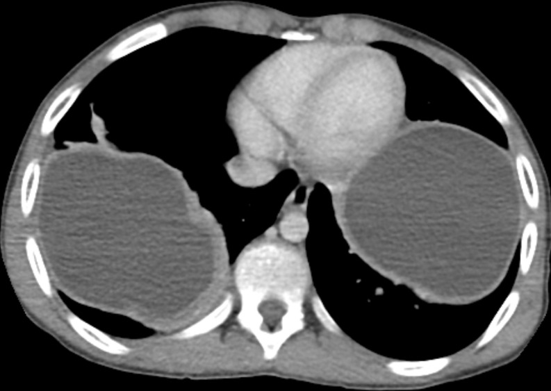
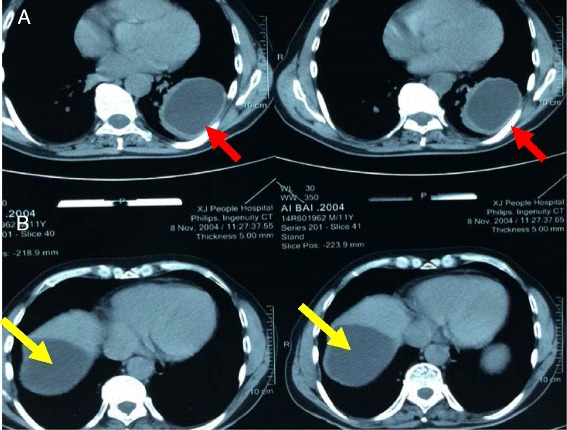

621 — Nang sán lá phổi (hydatid) ở trẻ: dấu hoa súng, Cumbo & phân biệt với áp-xe / Pulmonary hydatid cyst in children: water lily sign, Cumbo sign & differential
Tags: pattern:nang pattern:hoa-sung pattern:liem-khi vung:phoi protocol:CT-nguc protocol:MRI-nguc score:WHO-IWGE-CE
Mức chắc chắn (certainty): tổng hợp y văn (literature synthesis) — nhóm tự biên từ y văn mở (CC BY 4.0, CC BY-NC-ND 4.0); các ca minh họa là ca nguyên văn (giữ đúng tuổi/mô tả gốc).
Nối tiếp 616 – Biến chứng viêm phổi nhi: empyema & hoại tử (nang sán là một hàng trong gamut "hang phổi") và 610 – Dị dạng phổi bẩm sinh: đây là nguyên nhân nang/hang phổi hay gặp ở vùng dịch tễ (Việt Nam), xử trí đặc thù (mổ + albendazole) và cấm chọc dò nang nguyên vẹn.
1. Tổng quan bệnh học – cơ chế hình ảnh
- Tác nhân: ấu trùng sán dây Echinococcus granulosus (bệnh nang sán — cystic echinococcosis); chu kỳ chó (vật chủ chính) – cừu/gia súc (vật chủ trung gian), người nhiễm qua trứng (rau sống, tay bẩn, nước).
- Phổi là cơ quan đứng thứ 2 sau gan; trẻ nhiều hơn người lớn và nang mọc nhanh hơn ở trẻ. ~60% liên quan phổi phải, 50–60% ở thùy dưới; phân bố thùy dưới phải 36,04% > dưới trái 24,86% > trên phải 16,32% > trên trái 15,99% > giữa phải 6,79% [Eurasian J Med 2022, PMC11163342].
- Cấu trúc nang = 3 lớp → TẠI SAO hình ảnh đặc trưng:
- Ngoại bì (pericyst) = vỏ xơ do vật chủ tạo (không phải mô sán) — mỏng, có thể vôi hóa về sau.
- Màng ngoài/trong (ectocyst/endocyst) = màng sán sinh sản (chứa dịch trong, scolex, nang con — daughter cysts).
- Dịch nang là dịch nước trong → trên MRI T2 rất sáng, T1 tối, không ngấm cản quang; thành mỏng.
- TẠI SAO có các "dấu vỡ" (giải thích vật lý): khi nang vỡ vào phế quản →
- Khí lọt giữa pericyst và endocyst → dấu liềm khí (air crescent sign) — vỡ được "khu trú" (contained rupture).
- Khí + dịch trong lòng endocyst → dấu Cumbo (mức khí–dịch bên trong endocyst).
- Áp lực + trọng lực làm màng sán nổi trên mặt dịch → dấu hoa súng (water lily sign) — dấu đặc trưng nhất.
- Sau khi bệnh nhân khạc hết dịch/màng → nang rỗng chứa khí → dấu nang khô (dry cyst sign).
- Ngưỡng định lượng (145 nang / 102 trẻ ≤ 17 tuổi, MDCT) [Med Sci Monit 2017, PMC5546193]:
- Đường kính nang trung bình 5,45 ± 3,03 cm; nang đơn độc 70,6%; thùy dưới 58,6%; nang ngoại vi nhiều hơn trung tâm.
- Nang vỡ 47,5%; dấu thường gặp nhất là hoa súng 24,6%.
- (Bỏ nang ≤ 1 cm) nang không vỡ 6,23 ± 2,83 cm vs vỡ hoàn toàn 5,02 ± 2,80 cm (p = 0,020).
- Nang trung tâm 6,38 ± 3,11 cm vs ngoại vi 4,31 ± 2,37 cm (p < 0,0001) → nang càng lớn càng ở trung tâm.
- Phân loại WHO-IWGE (CE): nhóm hoạt động — CE1 nang đơn thùy (unilocular), CE2 đa thùy có nang con; nhóm chuyển tiếp — CE3a màng trong bong, CE3b đặc chủ yếu + nang con; nhóm không hoạt động — CE4 đặc, CE5 vôi hóa. Phân loại quyết định phác đồ & theo dõi [Diagnostics 2023, PMC10047450].

Trái: nang nguyên vẹn — CT ngực cửa sổ trung thất, nang khổng lồ đồng nhất ở thùy dưới phải và trái, thành mỏng, không ngấm (Aydin Y et al., Eurasian J Med 2022, PMC11163342, ca trẻ 13 tuổi, CC BY 4.0). Phải: nang đã vỡ — CT của trẻ 14 tuổi, thấy khí trong lòng nang + màng sán (màng nội bì) nổi ở thùy dưới trái (Aydin Y et al., cùng bài, CC BY 4.0). Ảnh ghép letterbox giữ nguyên tỷ lệ.2. Mẫu hình + chẩn đoán phân biệt theo tình trạng nang (Gamut)
- Theo TÌNH TRẠNG nang:
- Nguyên vẹn (uncomplicated): nang đồng nhất, giới hạn rõ, dịch đơn thuần, không ngấm, ± vôi hóa vỏ.
- Vỡ khu trú (contained): liềm khí giữa pericyst và endocyst, liềm khí nghịch đảo (inverse air crescent).
- Vỡ thông phế quản (communicating): hoa súng, Cumbo, khô (rỗng khí).
- Theo VỊ TRÍ: thùy dưới (đặc biệt dưới phải) → nang sán; tổn thương kèm nang gan (đồng thời) củng cố chẩn đoán — luôn quét gan và các cơ quan khác.
- DDx "hang/nang có mức khí–dịch" ở trẻ: áp-xe phổi (thành dày, ngấm, đông đặc quanh), mủ màng phổi (split pleura, góc tù), hang lao (thùy trên + nốt vệ tinh + tree-in-bud), nang phổi bẩm sinh/CPAM (nhiều nang thông khí, vách mỏng, hay một thùy), nang phế quản (bronchogenic cyst), u/K phổi hoại tử (thành dày gồ ghề), thuyên tắc nhiễm khuẩn (septic emboli).
- 4 câu hỏi khi đọc hình: (1) nang nguyên vẹn hay đã vỡ? (2) có màng sán/nang con không? (3) thành mỏng đều hay dày ngấm (nghi áp-xe/u)? (4) có nang ở gan/cơ quan khác không?
3. Bảng so sánh phân biệt (ma trận đối chiếu)
| Thực thể (entity) | Hình ảnh điển hình | Chốt vào (rule-in) | Chốt loại (rule-out) | Gợi ý xác nhận |
|---|---|---|---|---|
| Nang sán phổi NGUYÊN VẸN | Nang đồng nhất, dịch trong, giới hạn rõ, thành mỏng không ngấm, thùy dưới, ± vôi hóa vỏ | Nang dịch đơn thuần + tiền sử/dịch tễ + ± nang gan | Thành dày, ngấm thuốc, đông đặc quanh → áp-xe/u | CT ngực; ELISA/huyết thanh; siêu âm gan |
| Nang sán VỠ (hoa súng/Cumbo) | Màng sán nổi trên mức khí–dịch (hoa súng); khí giữa pericyst–endocyst + mức khí–dịch trong endocyst (Cumbo) | Màng sán nổi + mức khí–dịch (dấu hoa súng/Cumbo) | Chỉ có mức khí–dịch thuần không màng → nghĩ áp-xe | CT ngực lát mỏng; mô tả vị trí khí (giữa 2 màng) |
| Áp-xe phổi | Ổ mức khí–dịch, thành dày ngấm, đông đặc–hoại tử quanh | Sốt cao + thành dày ngấm + góc nhọn với màng phổi | Thành mỏng không ngấm + màng nổi → nang sán | Kháng sinh ± dẫn lưu; cấy dịch |
| Mủ màng phổi (empyema) | Dịch khu trú split pleura, góc tù, ôm phổi | Hai lá màng phổi dày ngấm tách nhau (split pleura) | Nang trong nhu mô phổi → không phải màng phổi | Siêu âm/CT; chọc hút |
| Hang lao | Thùy trên/đỉnh–sau, thành mỏng đều, nốt vệ tinh + tree-in-bud | Tree-in-bud + nốt vệ tinh + vị trí trên | Vị trí thùy dưới + màng nổi → nang sán | AFB/PCR đờm; IGRA |
| Nang phổi bẩm sinh / CPAM / nang phế quản | Nhiều nang một thùy thông khí, vách mỏng; nang phế quản đơn độc trung thất | Nhiều nang một thùy từ nhỏ + không nang gan | Nang đơn độc thùy dưới + dịch đồng nhất + nang gan → nang sán | CT/MRI; tiền sử; theo dõi |
| K phổi hoại tử / thuyên tắc nhiễm khuẩn | Thành dày gồ ghề lệch tâm, nốt ngoại vi đa dạng + mạch nuôi (septic emboli) | Thành > 15 mm gồ ghề + bệnh cảnh ung thư/nhiễm khuẩn huyết | Màng nổi/mức khí–dịch trong endocyst → nang sán | Sinh thiết; PET-CT |
Dấu hiệu chốt trên từng ảnh minh họa

Dấu hoa súng (water lily sign) — nang sán phổi vỡ ở bé gái 8 tuổi: mức khí–dịch do vỡ vào phế quản + màng sinh sản nổi trên mặt dịch, tạo hình "hoa súng". Akgul Ozmen C & Onat S, Med Sci Monit 2017 (PMC5546193), CC BY-NC-ND 4.0 (nguyên bản).4. Protocol + phân loại WHO-IWGE + xử trí + flowchart
- Hình ảnh: X-quang ngực (phát hiện nang/mức khí–dịch) → CT ngực (đánh giá vỡ, màng sán, vôi hóa, đa ổ). MRI khi cần phân biệt dịch (T2 sáng/T1 tối, không ngấm). Siêu âm bụng ± CT bụng để tìm nang gan kèm theo; CT/MRI não khi nghi đa cơ quan.
- Cảnh báo thủ thuật: CẤM chọc dò/dẫn lưu nang nguyên vẹn (nguy cơ sốc phản vệ do rò dịch nang + tung gieo scolex).
- Huyết thanh: ELISA/IHA dương tính hỗ trợ; âm tính không loại trừ.
- Nguyên tắc điều trị:
- Phẫu thuật là chính (nang phổi). Kỹ thuật hay dùng: cystotomy + capitonnage (phương pháp Barrett) — mở nang lấy màng, khâu đóng các lỗ phế quản rồi xóa khoang (capitonnage) để giảm rò khí, nhiễm trùng khoang tồn dư, empyema; Posadas (đóng lỗ phế quản trước rồi capitonnage); cystotomy không capitonnage — ít biến dạng nhu mô nhưng dễ rò khí. Hạn chế cắt nhu mô phổi, nhất là ở trẻ [EOJM 2022, PMC11163342; J Family Med Prim Care 2019, PMC6820383].
- Nang nông, nhỏ–vừa: có thể mổ nội soi qua lồng ngực (VATS).
- PAIR (chọc hút – bơm dung dịch diệt sán – hút lại) là phác đồ chuẩn cho nang GAN, không phải chuẩn cho nang phổi.
- Thuốc: albendazole 10–15 mg/kg/ngày chia 2 lần, dùng trước và sau mổ để giảm tái phát; tăng men gan 10–20% (cần theo dõi), thường dung nạp tốt [Interact Cardiovasc Thorac Surg 2022, PMC8766210].
- Theo dõi: khám + X-quang/CT định kỳ; tái phát ~1/153 (0,7%) trong loạt sau mổ + albendazole 15 mg/kg/ngày 2 chu kỳ 15 ngày.
flowchart TD
A[Tinh co nang/hang phoi o vung dich te] --> B[X-quang + CT nguc; sieu am/CT gan]
B --> C{Nang nguyen ven hay da vo?}
C -->|Nguyen ven: dich dong nhat, khong ngam| D[Nang san giai doan CE1/CE2]
C -->|Liem khi / hoa sung / Cumbo / kho| E[Nang san da vo - vao phe quan]
D --> F{Co nang gan / da co quan kem theo?}
F -->|Co| G[Danh gia da co quan; albendazole truoc mo]
F -->|Khong| H[Phau thuat: cystotomy + capitonnage; VATS neu nong nho-vua]
E --> H
G --> H
H --> I[Albendazole sau mo 10-15 mg/kg/ngay chia 2 lan; theo doi men gan]
I --> J[Theo doi dinh ky: tai phat ~0,7%; kham lai X-quang/CT]
A --> K{CANH BAO: nang nguyen ven}
K --> L[CAM choc do/dan luu - nguy co soc phan ve + tung gieo scolex]
5. Biến thể bình thường và cạm bẫy
- Không chọc mù nang nguyên vẹn: sốc phản vệ + gieo rắc là biến chứng chết người — luôn nghĩ nang sán trước khi can thiệp "nang dịch đơn thuần" ở vùng dịch tễ.
- Nang vỡ dễ bị nhầm áp-xe/K phổi: dấu chốt là màng sinh sản nổi và vị trí khí (giữa pericyst–endocyst); đừng vội kết luận áp-xe rồi dẫn lưu.
- Nang có thể ở nhiều cơ quan: ~60% liên quan phổi phải + nang gan đồng thời → luôn quét gan (và não/thận khi nghi).
- Đừng nhầm nang sán "khô" (rỗng khí) với nang phổi bẩm sinh — bối cảnh dịch tễ + dấu vỡ trước đó + huyết thanh giúp phân biệt.
- Nang lớn ở trung tâm (6,38 cm) khác nang ngoại vi nhỏ (4,31 cm) — vị trí ảnh hưởng kỹ thuật mổ (trung tâm dễ dính mạch–phế quản).
- Cạm bẫy mặt cắt: phân biệt ổ dịch–khí trong nhu mô với dịch–khí khoang màng phổi — vị trí (đẩy phổi/đổi theo tư thế) và góc với màng phổi quyết định.
6. Tự lượng giá — Blind Quiz
Ca 1 — Bé gái 8 tuổi, ho, sốt, đau ngực; CT ngực có nang vỡ ở thùy dưới. Nhìn ảnh, mô tả trước.
- Hỏi: dấu hiệu chính gọi tên là gì? Cơ chế tạo dấu? Chẩn đoán?
Bấm để hiện đáp án (findings + chẩn đoán)
- Dấu hiệu: mức khí–dịch trong nang + màng sinh sản nổi trên mặt dịch = dấu hoa súng (water lily sign).
- Cơ chế: nang vỡ vào phế quản → khí + dịch trong lòng nang, màng sán nổi theo trọng lực. Chẩn đoán: nang sán phổi đã vỡ (bé gái 8 tuổi). Nguồn: Akgul Ozmen C & Onat S, Med Sci Monit 2017 (PMC5546193), CC BY-NC-ND 4.0.
Ca 2 — Bé gái 8 tuổi, nang vỡ thùy giữa phải, CT ngực:

- Hỏi: khí nằm ở đâu (kể tên 2 khoang)? Đây là chốt gì?
Bấm để hiện đáp án (findings + chẩn đoán)
- Dấu hiệu: liềm khí tách pericyst khỏi endocyst + mức khí–dịch bên trong endocyst = dấu Cumbo.
- Chốt: khí nằm giữa 2 màng của nang (khác mức khí–dịch thuần của áp-xe). Chẩn đoán: nang sán phổi vỡ. Nguồn: Akgul Ozmen C & Onat S, Med Sci Monit 2017 (PMC5546193), CC BY-NC-ND 4.0.
Ca 3 — Bé trai 9 tuổi, nang đã vỡ khu trú thùy trên trái:

- Hỏi: mô tả dấu liềm khí? Vì sao gọi là vỡ "khu trú"?
Bấm để hiện đáp án (findings + chẩn đoán)
- Dấu hiệu: khí nằm giữa pericyst và endocyst (liềm khí) — dấu liềm khí (air crescent sign).
- Chẩn đoán: vỡ khu trú (contained rupture) của nang sán phổi — màng trong chưa vỡ hoàn toàn, khí mới len vào giữa 2 lớp. Nguồn: Akgul Ozmen C & Onat S, Med Sci Monit 2017 (PMC5546193), CC BY-NC-ND 4.0.
Ca 4 — Bé gái 9 tuổi sau khạc ra màng sán, CT ngực còn lại:

- Hỏi: nang còn chứa gì? Tên dấu? Tiên lượng?
Bấm để hiện đáp án (findings + chẩn đoán)
- Dấu hiệu: nang rỗng, chỉ còn khí sau khi bệnh nhân khạc hết dịch/màng = dấu nang khô (dry cyst sign).
- Chẩn đoán: nang sán phổi vỡ đã tháo dịch qua đường thở; cần theo dõi và điều trị ký sinh trùng/ổ tồn dư. Nguồn: Akgul Ozmen C & Onat S, Med Sci Monit 2017 (PMC5546193), CC BY-NC-ND 4.0.
Ca 5 — Bé trai 13 tuổi, khó thở; CT ngực cửa sổ trung thất:

- Hỏi: nang nguyên vẹn hay vỡ? Cần làm gì thêm trước can thiệp?
Bấm để hiện đáp án (findings + chẩn đoán)
- Dấu hiệu: nang khổng lồ đồng nhất, thành mỏng, không ngấm ở thùy dưới hai bên = nang sán phổi nguyên vẹn.
- Cần làm thêm: siêu âm/CT gan tìm nang đồng thời; huyết thanh; CẤM chọc dò (sốc phản vệ/tung gieo) → chuyển mổ (cystotomy + capitonnage) ± albendazole. Nguồn: Aydin Y et al., Eurasian J Med 2022 (PMC11163342), ca trẻ 13 tuổi, CC BY 4.0.
Ca 6 — Bé trai, CT ngực + bụng phát hiện nang:

- Hỏi: có mấy cơ quan bị nang? Vì sao phải quét thêm gan?
Bấm để hiện đáp án (findings + chẩn đoán)
- Dấu hiệu: CT cho thấy nang ở thùy dưới phổi trái (mũi tên đỏ) và nang ở gan phải (mũi tên vàng) — bệnh nang sán đa cơ quan.
- Vì sao quét gan: ấu trùng tới phổi qua gan (~60% liên quan phổi phải), nên nang gan đồng thời rất thường gặp và quyết định phác đồ (PAIR cho gan, mổ cho phổi). Nguồn: Ma J et al., J Cardiothorac Surg 2016 (PMC4974716), CC BY 4.0.
Bài liên quan chéo
- 600 – Tổng quan Hệ Nhi khoa
- 616 – Biến chứng viêm phổi nhi: empyema & hoại tử phổi (nang sán trong gamut hang)
- 610 – Suy hô hấp sơ sinh & dị dạng phổi bẩm sinh (CPAM/nang phổi bẩm sinh)
- 025 – Hang & nấm phổi: dấu liềm khí (hang/mức khí–dịch)
- 040 – Tràn dịch màng phổi (phân biệt ổ dịch nhu mô vs khoang màng phổi)
- 123 – Nang gan & bệnh gan đa nang (nang gan đơn thuần vs nang sán)
- 632 – Theo dõi dài hạn & dự phòng tái phát nang sán (theo dõi nhiều năm, huyết thanh, albendazole)
Ảnh
- Xem
images/CREDITS.md. Ảnh CC BY 4.0 được phép ghép letterbox (composite); ảnh CC BY-NC-ND 4.0 giữ nguyên bản, không crop/ghép.
Không dùng để chẩn đoán độc lập khi chưa có người hướng dẫn.